library(tidyverse)
cov19 <- read_csv("https://raw.githubusercontent.com/CSSEGISandData/COVID-19/refs/heads/master/csse_covid_19_data/csse_covid_19_time_series/time_series_covid19_confirmed_US.csv")Midterm
BIOL 607
1) Data Reshaping and Visualization
1a.
1b.
cov19_cali <-
cov19 |>
filter(Province_State == "California")
long_cov19_cali <-
cov19_cali |>
select(-c(UID, iso2, iso3, code3, FIPS, Admin2, Country_Region, Lat, Long_, Combined_Key)) |>
group_by(Province_State) |>
pivot_longer(
cols = -Province_State,
names_to = "date_col",
values_to = "cumulative_cases"
) |>
mutate( date_col = mdy(date_col),
new_cases = c(NA, diff(cumulative_cases)))1c.
cov19_2020 <-
long_cov19_cali |>
filter(date_col<"2021-01-01")
cov19_plot <- ggplot(cov19_2020,
aes(x = date_col, y = cumulative_cases)) +
geom_line(color = "cyan", size = 1) +
scale_y_continuous(name="Cumulative Cases", labels = scales::comma) +
labs(title = "Cumulative Covid-19 Cases within 2020",
x = NA) +
theme_dark() +
theme(axis.title.x=element_blank(),
axis.text.x=element_blank(),
axis.ticks.x=element_blank())
cov19_plot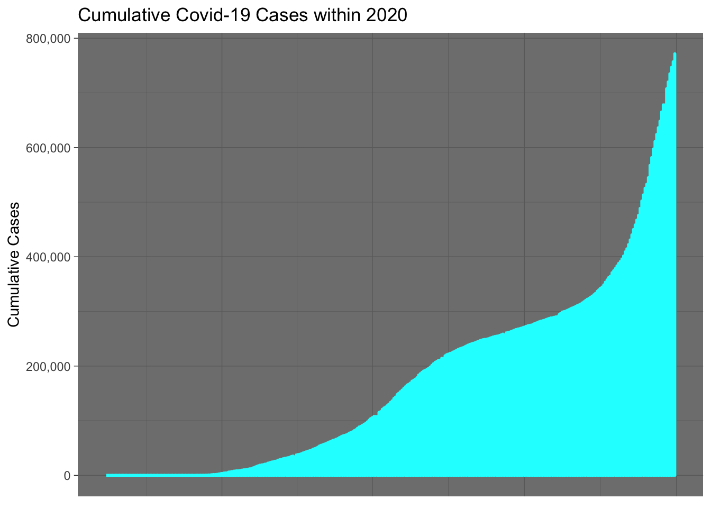
2) Fit and Evaluate Model
2a/b.
# Load Data
morph <- read_csv("data/Morphology+data.csv")
# Examine the data looking at understanding each variable
head(morph)# A tibble: 6 × 10
`Bird #` Sex `Age (days)` `Exp. Temp. (degree C)` `Mass (g)` `Tarsus (mm)`
<dbl> <chr> <dbl> <dbl> <dbl> <dbl>
1 1 <NA> 5 15 16.1 19.4
2 2 m 5 15 19.2 20.4
3 3 f 5 15 17.5 19.0
4 4 m 5 15 14.4 20.1
5 5 f 5 15 17.4 21.8
6 6 m 5 15 15.7 19.8
# ℹ 4 more variables: `Culmen (mm)` <dbl>, `Depth (mm)` <dbl>,
# `Width (mm)` <dbl>, NOTES <chr># Looking at the types of variables the data contains
# Also, looking for NA's and categorical labeling consistency
str(morph)spc_tbl_ [880 × 10] (S3: spec_tbl_df/tbl_df/tbl/data.frame)
$ Bird # : num [1:880] 1 2 3 4 5 6 7 8 9 10 ...
$ Sex : chr [1:880] NA "m" "f" "m" ...
$ Age (days) : num [1:880] 5 5 5 5 5 5 5 5 5 5 ...
$ Exp. Temp. (degree C): num [1:880] 15 15 15 15 15 15 15 15 15 15 ...
$ Mass (g) : num [1:880] 16.1 19.2 17.5 14.4 17.4 ...
$ Tarsus (mm) : num [1:880] 19.4 20.4 19 20.1 21.8 ...
$ Culmen (mm) : num [1:880] 7.64 7.49 7.31 7.34 8.24 6.82 7.84 7.39 7.4 7.81 ...
$ Depth (mm) : num [1:880] 4.23 4.46 3.92 3.85 4.42 3.65 3.94 3.72 4.5 4.09 ...
$ Width (mm) : num [1:880] 4.49 4.44 4.01 4.22 4.56 3.73 4.6 4.66 3.83 3.89 ...
$ NOTES : chr [1:880] NA NA NA NA ...
- attr(*, "spec")=
.. cols(
.. `Bird #` = col_double(),
.. Sex = col_character(),
.. `Age (days)` = col_double(),
.. `Exp. Temp. (degree C)` = col_double(),
.. `Mass (g)` = col_double(),
.. `Tarsus (mm)` = col_double(),
.. `Culmen (mm)` = col_double(),
.. `Depth (mm)` = col_double(),
.. `Width (mm)` = col_double(),
.. NOTES = col_character()
.. )
- attr(*, "problems")=<externalptr> # Preparing for analysis we need to manipulate data
# Including modifying variable labels for ease of coding
morph_clean <-
morph |>
mutate(
ID = as.factor(`Bird #`),
Age_days = as.factor(`Age (days)`),
Tarus_mm = `Tarsus (mm)`,
Exp_Temp_C = `Exp. Temp. (degree C)`
) |>
select(-c(`Bird #`, `Age (days)`, `Tarsus (mm)`, `Exp. Temp. (degree C)`))
str(morph_clean)tibble [880 × 10] (S3: tbl_df/tbl/data.frame)
$ Sex : chr [1:880] NA "m" "f" "m" ...
$ Mass (g) : num [1:880] 16.1 19.2 17.5 14.4 17.4 ...
$ Culmen (mm): num [1:880] 7.64 7.49 7.31 7.34 8.24 6.82 7.84 7.39 7.4 7.81 ...
$ Depth (mm) : num [1:880] 4.23 4.46 3.92 3.85 4.42 3.65 3.94 3.72 4.5 4.09 ...
$ Width (mm) : num [1:880] 4.49 4.44 4.01 4.22 4.56 3.73 4.6 4.66 3.83 3.89 ...
$ NOTES : chr [1:880] NA NA NA NA ...
$ ID : Factor w/ 40 levels "1","2","3","4",..: 1 2 3 4 5 6 7 8 9 10 ...
$ Age_days : Factor w/ 22 levels "5","7","9","11",..: 1 1 1 1 1 1 1 1 1 1 ...
$ Tarus_mm : num [1:880] 19.4 20.4 19 20.1 21.8 ...
$ Exp_Temp_C : num [1:880] 15 15 15 15 15 15 15 15 15 15 ...2c.
library(ggthemes)
morph_plot <-
ggplot(morph_clean,
aes(x = Age_days, y = Tarus_mm, colour = Age_days)) +
facet_wrap(~Exp_Temp_C) +
geom_boxplot() +
scale_color_viridis_d(direction = -1, option = "B") +
labs(
title = "Tarsus Length vs Age by Treatment",
x = "Age (days)",
y = "Tarsus Length (mm)"
) +
theme_calc(base_size = 8)
morph_plot 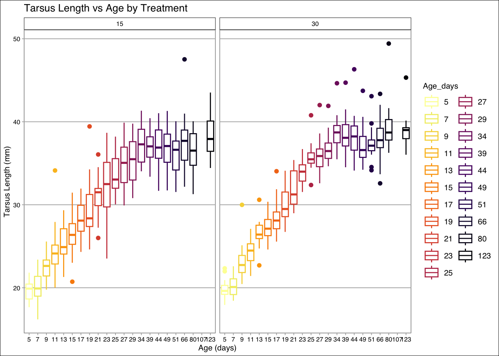
2d.
Looking at the fit model assumptions, the only concern is the positive predictive check where our model predicted data is not exactly the same as out observed data. It was warned on the assignment so not too much of a concern, may be due to deaths or issues along the experiment.
library(performance)
library(car)
library(effectsize)
library(broom)
library(visreg)
morph_clean$Age_days <- as.numeric(morph_clean$Age_days)
morph_mlr <- lm(Tarus_mm ~ Age_days * Exp_Temp_C
, data = morph_clean)
check_model(morph_mlr)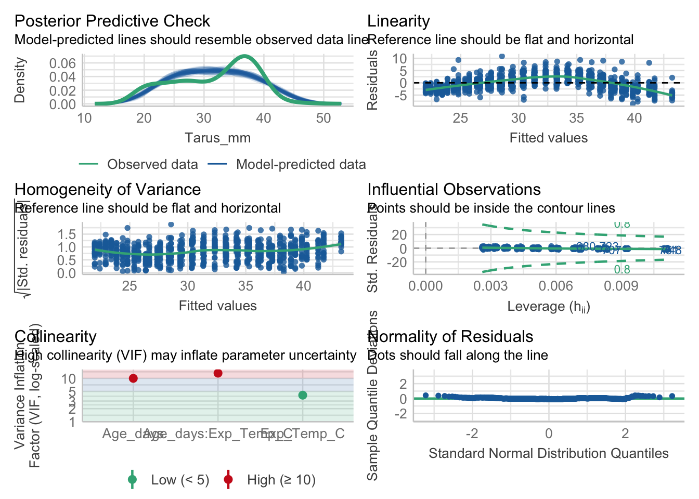
2e.
library(emmeans)
tidy(morph_mlr)# A tibble: 4 × 5
term estimate std.error statistic p.value
<chr> <dbl> <dbl> <dbl> <dbl>
1 (Intercept) 20.7 0.712 29.0 1.61e-125
2 Age_days 0.888 0.0570 15.6 1.14e- 47
3 Exp_Temp_C 0.0254 0.0301 0.844 3.99e- 1
4 Age_days:Exp_Temp_C 0.00344 0.00240 1.43 1.53e- 1visreg(morph_mlr, "Age_days", by = "Exp_Temp_C", gg = TRUE, type = "contrast") +
theme_clean() +
labs(title = "Interaction Model",
y = "Tarus Length (mm)",
x = "Age (days)")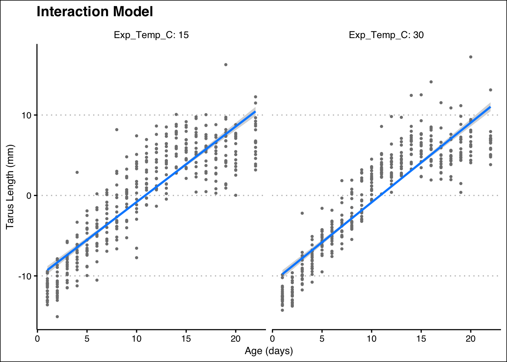
3) Something Generalized
3a.
Yes my model does meet assumptions only thing concerning is the end of the residuals. I chose a gamma error distribution because our response variable is positive and continous
library(glmmTMB)
data <- read_csv("data/greenhouse_inoculation_expt_2010.csv")
mar12 <- data |>
select(rhiz_region, height_mar12, leaf_mar12)
mar12_glm <- glm(leaf_mar12 ~ rhiz_region + height_mar12,
family = Gamma(link = "log"), data = mar12)
check_model(mar12_glm)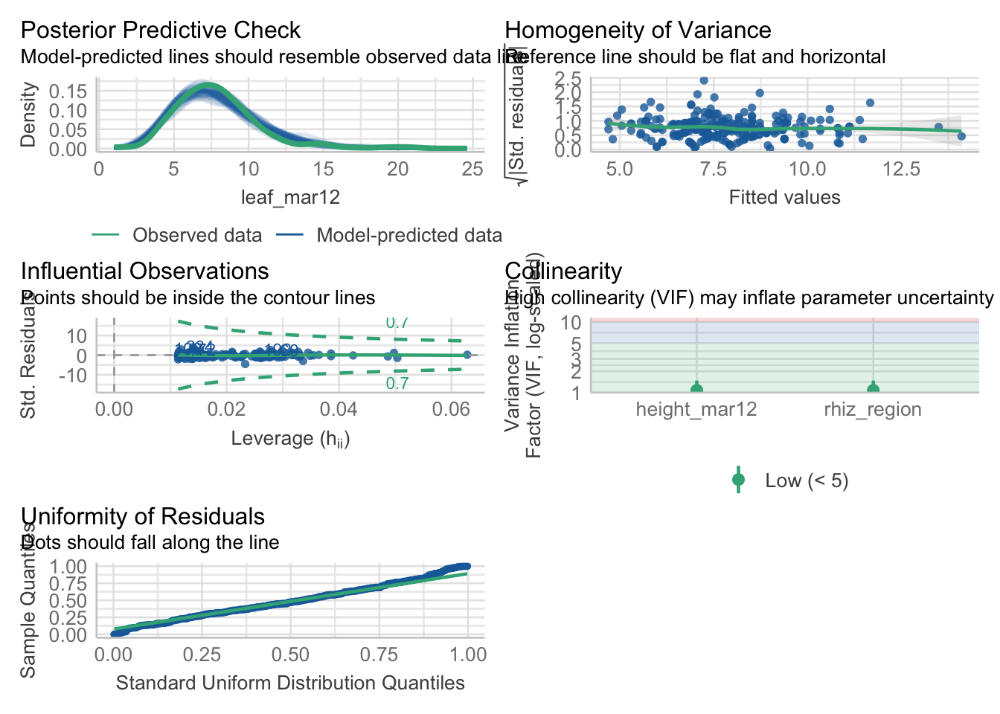
3b.
Looking at the estimated marginal means plot below we can see that the rhizobial regions edge and interior enables more leaves relative to the control, while the beyond region enables less leaves relative to the control.
emmeans(mar12_glm, pairwise ~ rhiz_region, ggplot = TRUE) |>
plot(comparisons = TRUE) +
labs(y = "Rhizobial Regions") +
theme_clean()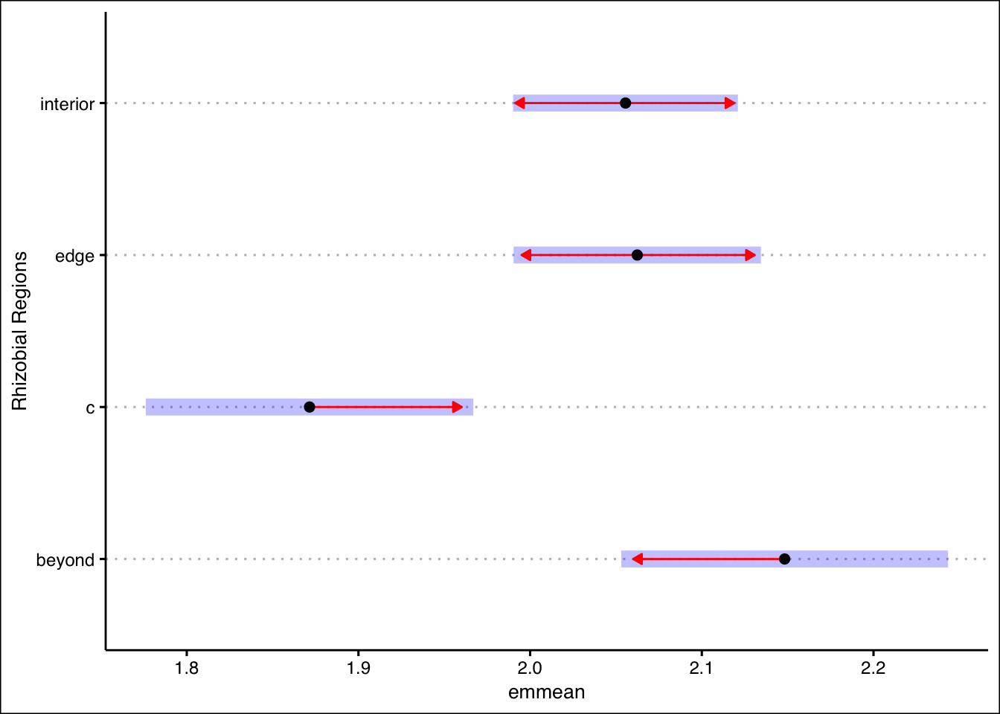
3c.
lambda <- 1:30
poisson_bounds <- tibble(
lambda = lambda,
lower = qpois(0.025, lambda),
upper = qpois(0.975, lambda)
)
ggplot(poisson_bounds, aes(x = lambda)) +
geom_ribbon(aes(ymin = lower, ymax = upper), fill = "lightblue", alpha = 0.5) +
geom_line(aes(y = lambda), color = "black") +
labs(title = "95% Prediction Interval: Poisson", y = "Count", x = "Lambda")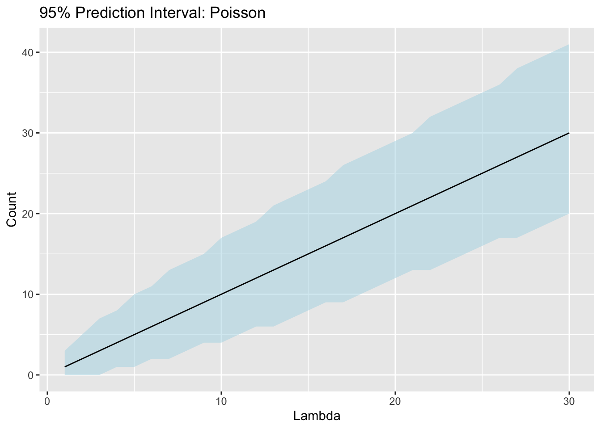
Negative Binomial
size <- 10
nb_bounds <- tibble(
mean_lambda = lambda,
lower = qnbinom(0.025, size = size, mu = mean_lambda),
upper = qnbinom(0.975, size = size, mu = mean_lambda)
)
ggplot(nb_bounds, aes(x = mean_lambda)) +
geom_ribbon(aes(ymin = lower, ymax = upper), fill = "lightgreen", alpha = 0.5) +
geom_line(aes(y = mean_lambda), color = "black") +
labs(title = "95% Prediction Interval: Negative Binomial", y = "Count", x = "Mean")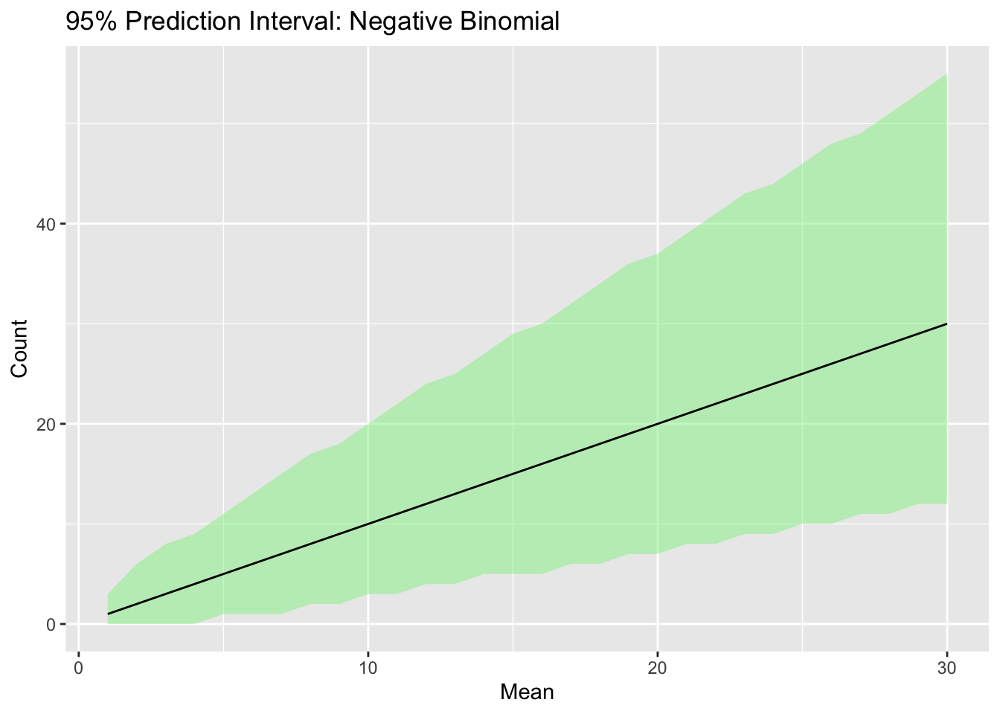
3d.
library(MASS)
height_vals <- mar12 |>
summarise(min = min(height_mar12),
mean = mean(height_mar12),
max = max(height_mar12)) |>
pivot_longer(everything(), names_to = "height_level", values_to = "height_mar12")
new_mar12 <- expand.grid(rhiz_region = unique(mar12$rhiz_region),
height_mar12 = height_vals$height_mar12)
new_mar12_aug <- augment(mar12_glm, newdata = new_mar12, se_fit = TRUE)
# Gamma Prediction Intervals & Confidence Intervals
gamma_shape <- gamma.shape(mar12_glm)$alpha
new_mar12_aug <- new_mar12_aug |>
mutate(
fit_resp = exp(.fitted),
lower_CI = exp(.fitted - 2 * .se.fit),
upper_CI = exp(.fitted + 2 * .se.fit),
lower_PI = qgamma(0.025,
shape = gamma_shape,
scale = fit_resp / gamma_shape),
upper_PI = qgamma(0.975,
shape = gamma_shape,
scale = fit_resp / gamma_shape))
ggplot(new_mar12_aug, aes(x = height_mar12, y = fit_resp)) +
stat_smooth(method = glm,
method.args = list(family = Gamma(link = "log")),
color = "black") +
facet_wrap(~rhiz_region) +
geom_ribbon(aes(ymin = lower_CI, ymax = upper_CI), alpha = 0.5, linewidth = 0.3, fill = "cyan") +
geom_ribbon(aes(ymin = lower_PI, ymax = upper_PI), alpha = 0.2, linewidth = 0.5, linetype = 2, color = "orange") +
labs(
title = "Fitted Leaf Count on March 12 by Height and Rhizobial Region",
subtitle = "95% Confidence and Prediction Intervals",
x = "Plant Height March 12 (cm)",
y = "Fitted Values",
caption = "Blue Shaded Area = 95% CI\nDashed Orange Lines = 95% PI") +
theme_clean()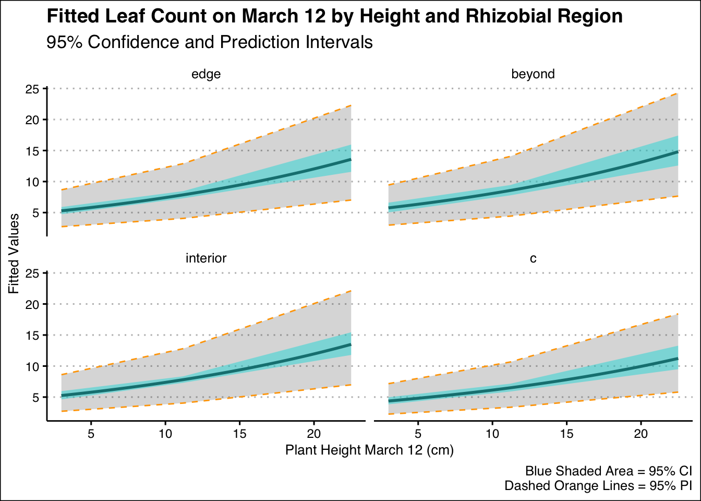
3e.
library(sinterval)
library(ggdist)
# Simulating Range
height_range <- seq(min(mar12$height_mar12), max(mar12$height_mar12), length.out = 66)
mar12_range <- expand.grid(
rhiz_region = unique(mar12$rhiz_region),
height_mar12 = height_range)
fit_sims <- add_fitted_sims(mar12_range, mar12_glm)
pred_sims <- add_predicted_sims(mar12_range, mar12_glm)fit_plot <- ggplot(fit_sims,
aes(x = height_mar12,
y = leaf_mar12_fit,
color = rhiz_region, fill = rhiz_region)) +
stat_lineribbon(aes(y = leaf_mar12_fit), alpha = 0.3, color = NA) +
stat_summary(fun = mean, geom = "line", size = 1) +
facet_wrap(~rhiz_region) +
labs(title = "Fit Intervals",
y = "Fit Leaf March 12",
x = "Height March 12") +
theme_clean() +
theme(legend.position = "none")
fit_plot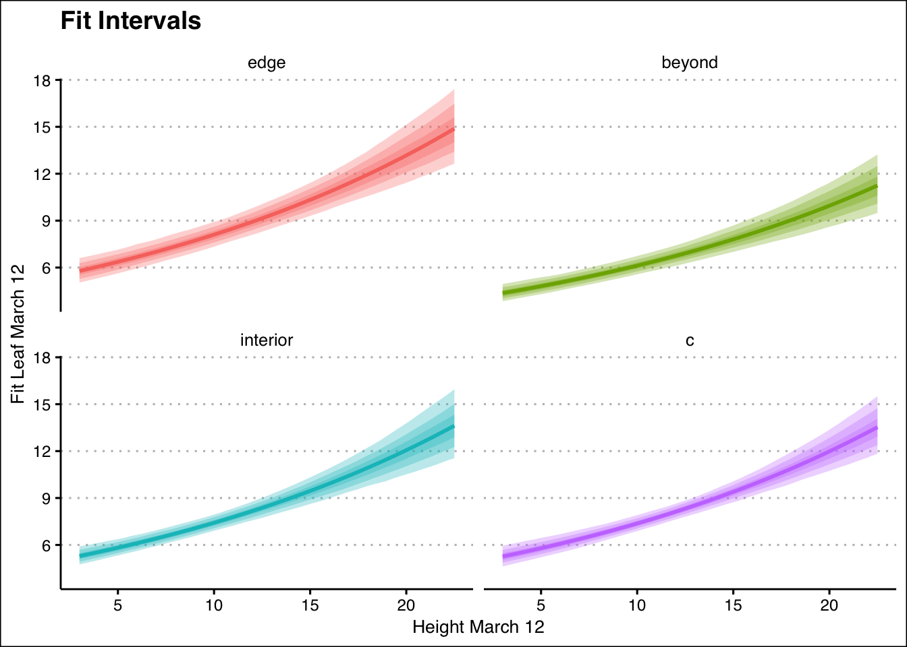
pred_plot <- ggplot(pred_sims,
aes(x = height_mar12,
y = leaf_mar12_predict,
color = rhiz_region, fill = rhiz_region)) +
stat_lineribbon(aes(y = leaf_mar12_predict), alpha = 0.3, color = NA) +
stat_summary(fun = mean, geom = "line", size = 1) +
facet_wrap(~rhiz_region) +
labs(title = "Predition Intervals",
y = "Leaf March 12 Prediction",
x = "Height March 12") +
theme_clean() +
theme(legend.position = "none")
pred_plot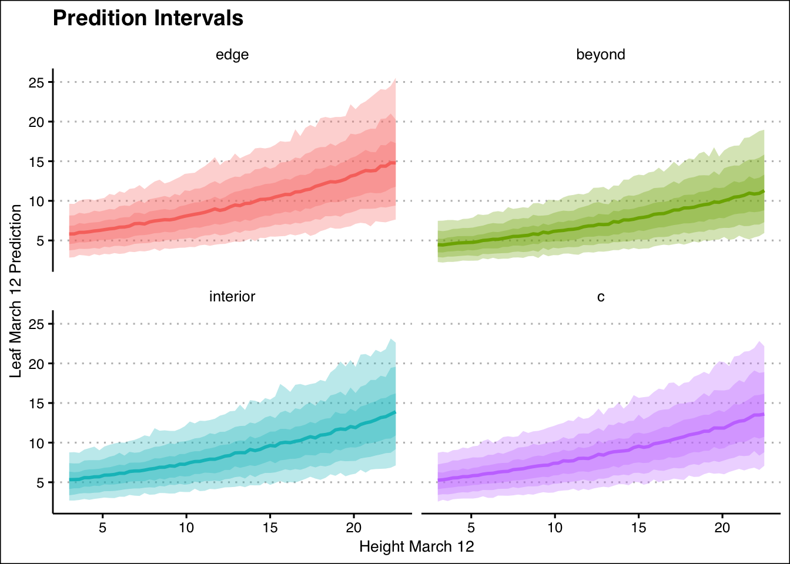
4) Mix it up!
4a.
reedfrogs <- read_delim("https://github.com/rmcelreath/rethinking/raw/master/data/reedfrogs.csv",
delim = ";") |>
mutate(tank = 1:n() |> as.character(),
died = density - surv)
reed_plot <- ggplot(reedfrogs,
aes(x = size, y = surv / density, color = pred)) +
geom_jitter(width = 0.1) +
labs(y = "Proportion survived", x = "Tank size") +
theme_clean()
reed_plot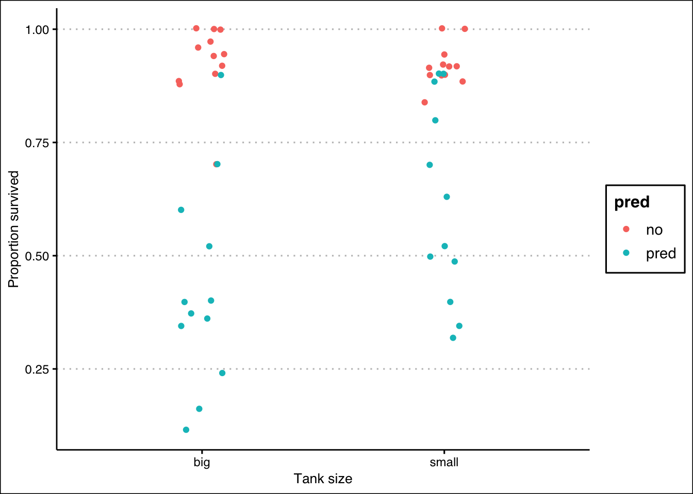
reedfrogs_expanded <- reedfrogs |>
group_by(tank, size, pred, density) |>
reframe(status = c(rep(1, surv), rep(0, died))) |>
ungroup()
reed_expanded_plot <- ggplot(reedfrogs_expanded,
aes(x = pred, y = status, color = size)) +
geom_jitter(width = 0.2, height = 0.05, alpha = 0.3) +
labs(title = "Individual outcomes per tank", y = "Survival (1 = lived, 0 = died)") +
facet_wrap(~size) +
theme_minimal()
reed_expanded_plot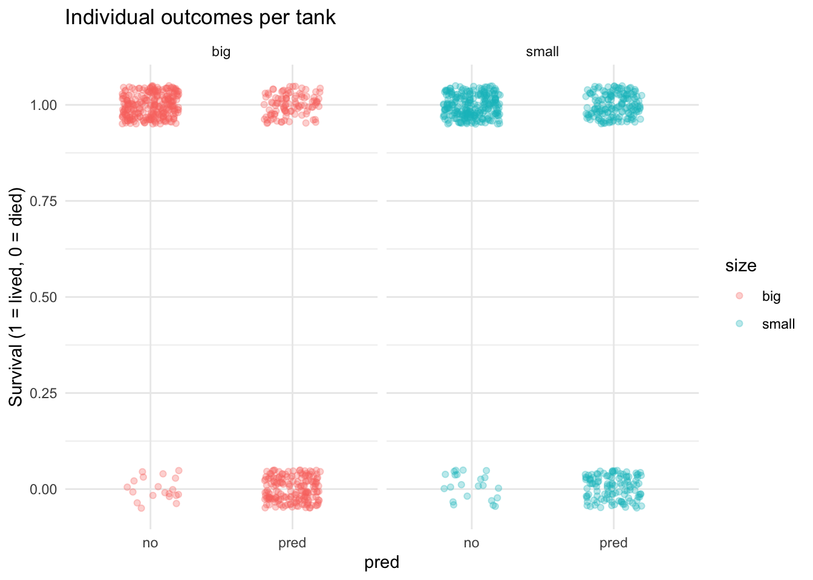
You can see within smaller tank there is slight greater survivorship compared to the big tanks as we can see in both plots.
4b.
reed_glm <- glm(
cbind(surv, died) ~ pred * size,
data = reedfrogs,
family = binomial)
check_overdispersion(reed_glm)# Overdispersion test
dispersion ratio = 1.032
p-value = 0.4484c.
The overdispersion when fit a mixed model with random tank effect is lower, in this mix model we group the tables by their tank rather than treated as independents.
library(lme4)
reed_mm <- glmer(
cbind(surv, died) ~ pred * size + (1 | tank),
data = reedfrogs,
family = binomial)
check_overdispersion(reed_mm)# Overdispersion test
dispersion ratio = 0.984
p-value = 0.7764d.
In model with intercepts compared to without, there is slightly any change to the estimate but the standard error increases with the fixed intercept model. This is to the grouping of tadpoles within the tank in the mixed model compared to the individual tadpoles in the other model
library(broom.mixed)
coef(reed_glm) (Intercept) predpred sizesmall predpred:sizesmall
2.6200814 -3.1923467 -0.1581643 1.0620058 fixef(reed_mm) (Intercept) predpred sizesmall predpred:sizesmall
2.7472458 -3.2056524 -0.1597944 1.0820274 tidy(reed_glm) |> filter(term != "(Intercept)")# A tibble: 3 × 5
term estimate std.error statistic p.value
<chr> <dbl> <dbl> <dbl> <dbl>
1 predpred -3.19 0.268 -11.9 1.16e-32
2 sizesmall -0.158 0.325 -0.486 6.27e- 1
3 predpred:sizesmall 1.06 0.369 2.88 3.97e- 3tidy(reed_mm) |> filter(effect == "fixed")# A tibble: 4 × 7
effect group term estimate std.error statistic p.value
<chr> <chr> <chr> <dbl> <dbl> <dbl> <dbl>
1 fixed <NA> (Intercept) 2.75 0.323 8.51 1.69e-17
2 fixed <NA> predpred -3.21 0.400 -8.02 1.07e-15
3 fixed <NA> sizesmall -0.160 0.444 -0.360 7.19e- 1
4 fixed <NA> predpred:sizesmall 1.08 0.558 1.94 5.26e- 24e.
library(modelbased)
estimate_means(reed_mm, at = c("pred", "size"), type = "response") |>
plot()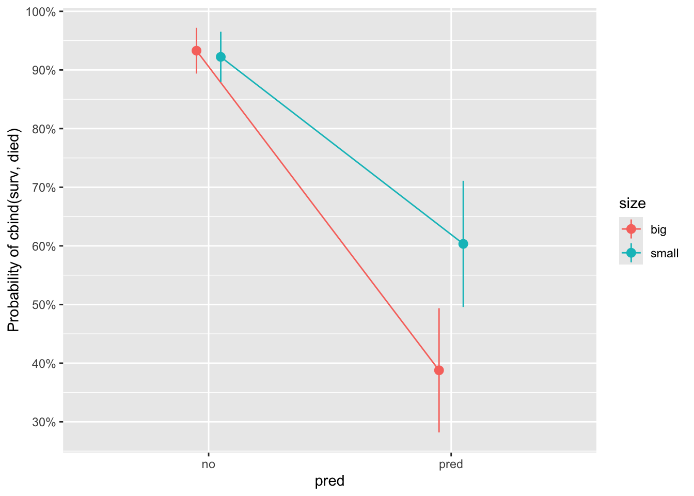
reed_contrasts <- estimate_contrasts(reed_mm, at = c("pred", "size"), type = "response")
reed_contrasts$contrast <- rownames(reed_contrasts)
reed_contrasts_plot <- ggplot(reed_contrasts, aes(x = Difference, y = contrast)) +
geom_point(size = 3, color = "steelblue") +
geom_errorbarh(aes(xmin = CI_low, xmax = CI_high), height = 0.2, color = "steelblue") +
geom_vline(xintercept = 0, linetype = "dashed", color = "gray50") +
geom_text(aes(label = round(Difference, 2)),
hjust = -0.3, size = 3.5, color = "black") +
labs(x = "Predicted Difference in Survival Probability",
y = "Contrast Group",
title = "Model Based Contrasts") +
theme_clean()
view_contrast <- reed_contrasts[, c("contrast", "Difference", "Level1", "Level2")]
view_contrastcontrast | Difference | Level1 | Level2
-----------------------------------------------
1 | -0.01 | no, small | no, big
2 | -0.55 | pred, big | no, big
3 | -0.33 | pred, small | no, big
4 | -0.53 | pred, big | no, small
5 | -0.32 | pred, small | no, small
6 | 0.22 | pred, small | pred, bigreed_contrasts_plot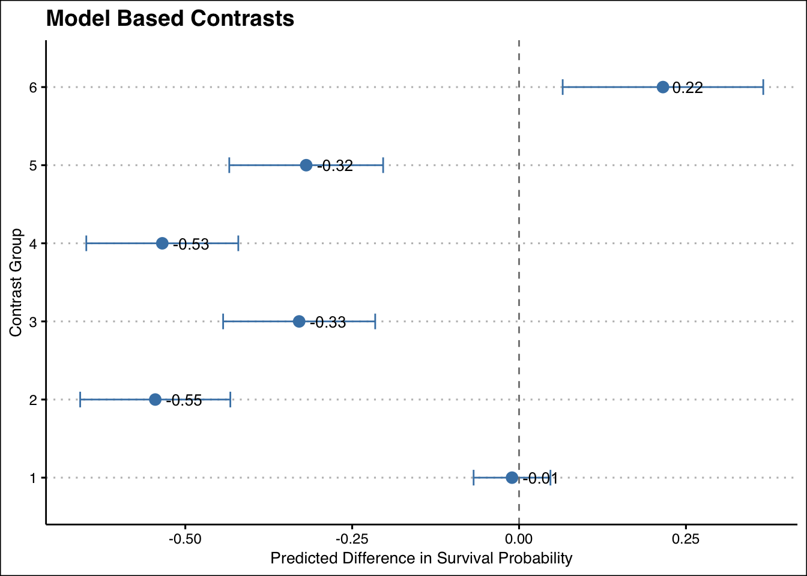
5) What did we do? (In LaTeX)
\[p_{ij}\] = probability tadpole(i) in tank(j) survives
Model Equation \[ logit(\rho_{ij})=\beta_{0}+\beta_{1}\cdot pred_{j}+\beta_{2}\cdot size_{j}+\beta_{3}\cdot (pred_{j}\times size_{j}) + u_{j} \]
\[u_{j}\] = random intercept for each tank(j) \[\sigma^{2}_{tank}\] = variance among tanks
Random Effect \[ u_{j} \sim \mathcal{N}(0, \sigma^{2}_{tank}) \]
Midterm Self-Evaluation
A.
I am doing okay, I have gotten a little lost when it comes to mixed models and beyond but with this and more review I will gain a better grasp.
B.
After completing this I feel fairly confident in linear models and working on feeling more confident in generalized linear models and mixed models.
C.
I find data manipulation and coding itself the easiest just struggle to fully grasp the statistical process
D.
I’d say it is going fairly well, it is something I am enjoying to practice and hopefully can continue to do as a career.
E.
I see applying coding in various other was such as data collection as well as I have seen it used for data transferring and uploading.
F.
I see the most opportunities for growth at the moment within the concepts themselves, I find myself going back to lectures and labs to understand concepts fully and that benefits me the most.
G.
I began doing most of the optional readings and that helped me a bunch with beginning coding skill and statistical processes. As the semester has gone by I have missed a few reading that may have been critical to my growth. This is something I intend on going back a reading to build my knowledge.
H.
It was a mixture of both comfortable and some challenging tasks, I did not struggle making the models my main issue was visualizing and comprehending my assumptions correctly. This was a good challenge to make sure I understand what I am coding as the questions challenged me to think harder.
I.
Strong, the only task I did not complete was 4f. as I was running out of time. It may have been difficult for me to begin the question but I am sure I would be able to figure it out. For the rest of the assignment I believe everything was completed to its fullest including the usage of recommenced programs that were not required.
J.
When it comes to the entirety of the semester so far I believe I also would asses myself as strong. This is due to my effort in the homework assignment, making sure I go above and beyond. As well as my constant viewing of past content if I have confusion allows me to stay on task with the topics.
K.
I don’t have any specific goals for the rest of this course, I do wish to accomplish a few more things and gather as much knowledge as I can prior to the course finish. I am currently graduating in May so it is nice to have the expirence so I understand the options that are out there in the biology world.